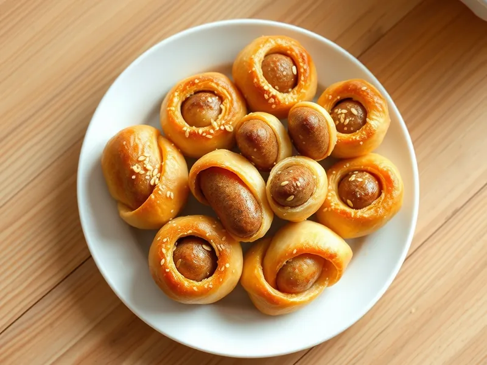

Сосиски в слоёном тесте в духовке
Сосиски, обёрнутые полосками готового слоёного теста и запечённые до золотистой корочки
30 мин4 порц.652 ккал на порциюБ 19 · Ж 48 · У 39Русская кухня
Открыть в приложении: порции, таймеры, список покупок
Продукты на 4 порц.
- Сосиски8 шт
- Слоёное тесто400 г
- Яйцо куриное1 шт
- Сыр твёрдый по желаниюпо вкусу
- Кунжут по желанию1 ч. л.
- Мука пшеничная1 ст. л.
Как готовить
- Разморозьте тесто заранее: утром переложите его из морозилки в холодильник. Разогрейте духовку до 200 °C (сильный жар).
- Слегка подпылите стол мукой, раскатайте тесто в пласт толщиной 3 мм и нарежьте полосками шириной 2 см.
- Снимите с сосисок оболочку. Оберните каждую полоской теста по спирали с небольшим нахлёстом, при желании вложите под тесто тонкий брусочек сыра.
- Выложите на противень с бумагой, смажьте взбитым яйцом и посыпьте кунжутом.
- Запекайте 15-18 минут, пока тесто не поднимется слоями и не станет золотистым.
Совет. Работайте с холодным тестом и быстро: тёплое слоёное тесто липнет к рукам и плохо поднимается в духовке.